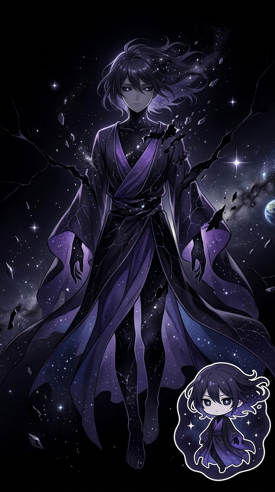
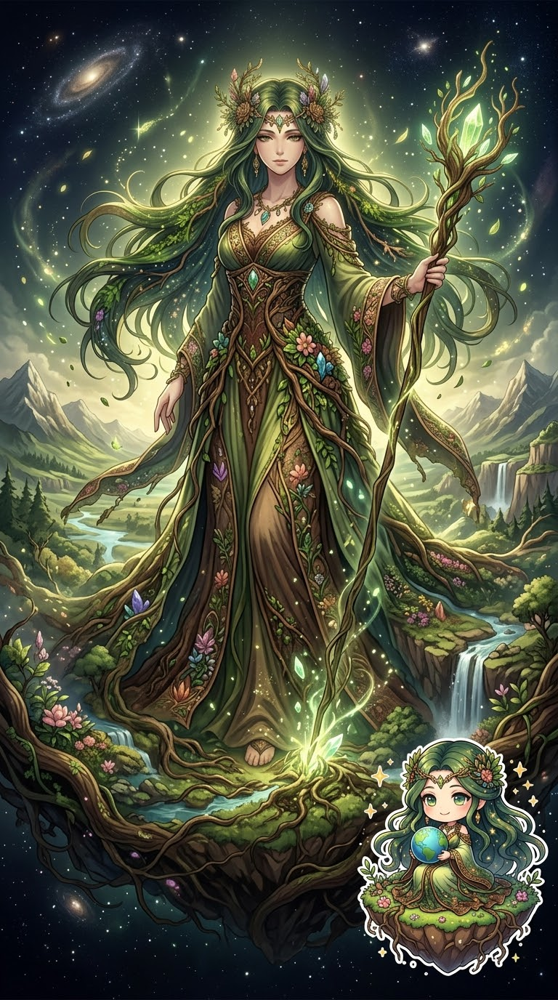
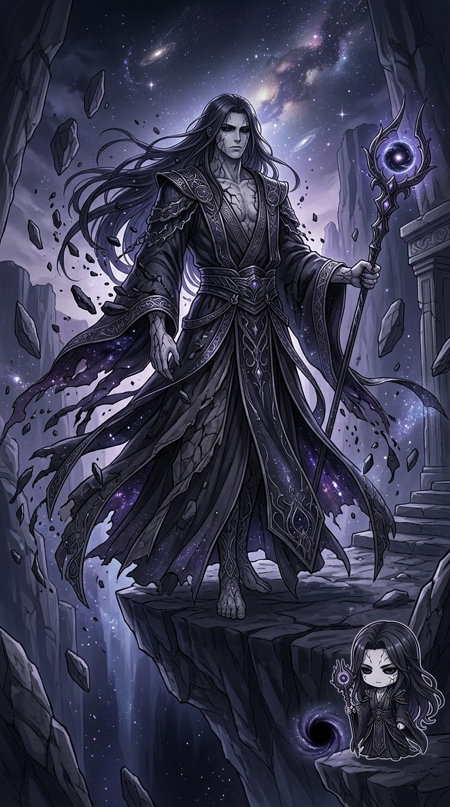
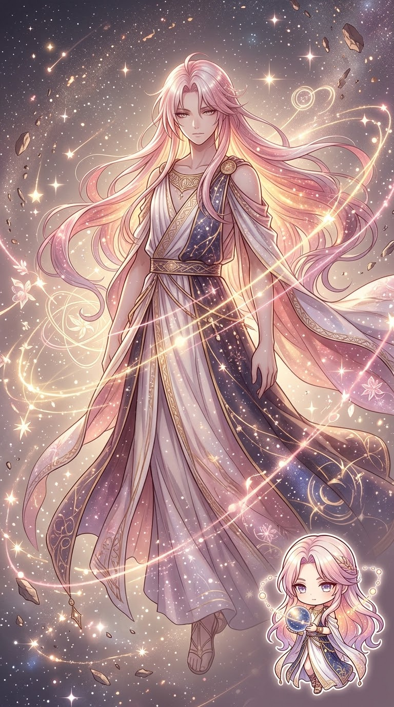
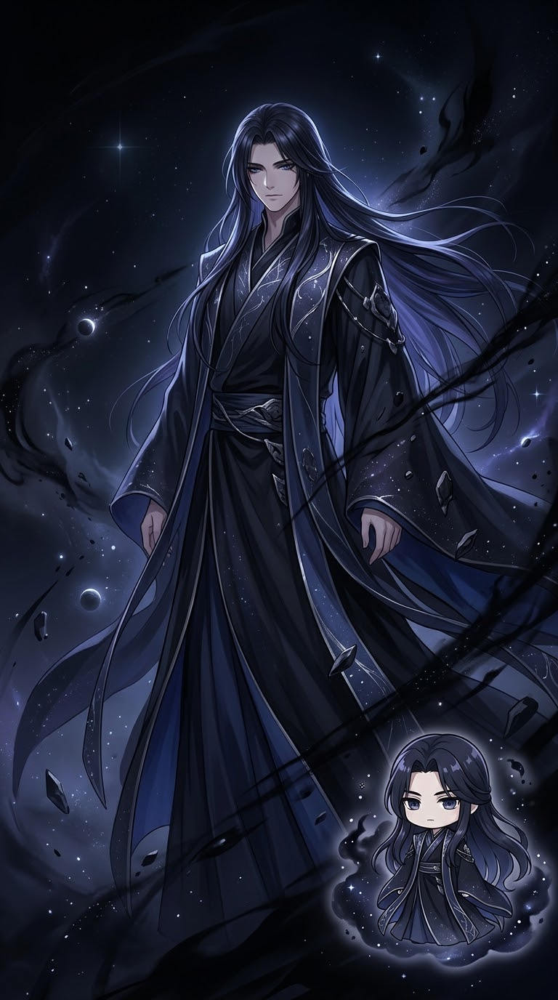
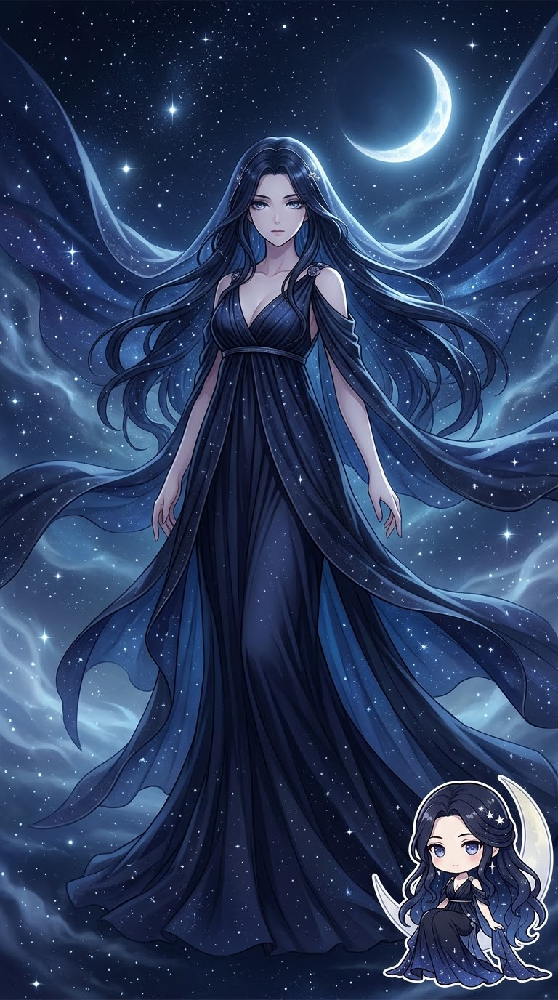
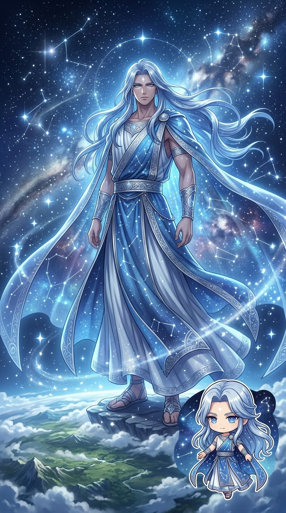
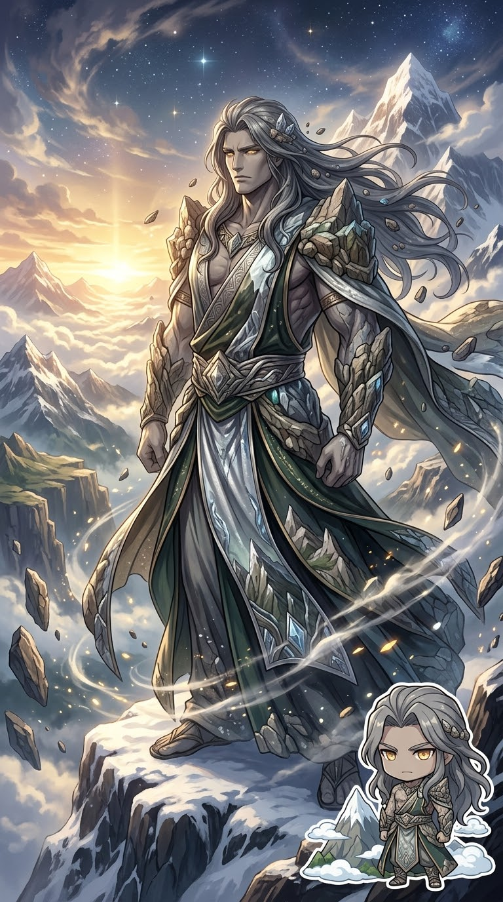
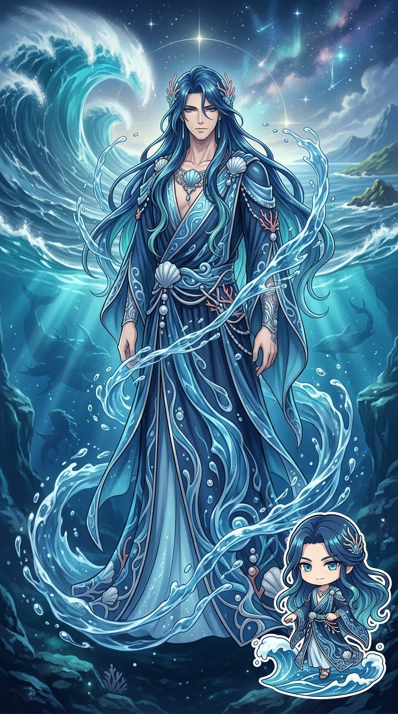

01 · PRIMORDIAL
Χάος｜卡俄斯｜Chaos
原初空隙
希臘神話宇宙起源中的最初存在之一。 在赫西俄德的《神譜》中， Χάος 位於神譜開端。
PRIMORDIAL GODS × GREEK COSMOGONY
在眾神與英雄出現以前， 古希臘神話首先描繪的是一個正在形成的宇宙。
原初神是希臘神話中最早出現在宇宙起源神話中的神祇。
他們與後來的奧林帕斯眾神不同， 許多原初神本身就代表宇宙中的基本存在， 例如大地、天空、黑暗、黑夜與海洋。
本網站主要以赫西俄德的《神譜》 （Theogony）作為早期神譜的主要參考來源。
不同的古希臘神話傳統並不完全相同， 因此部分神祇的起源與神譜關係可能存在差異。
在赫西俄德《神譜》的敘述中， Χάος（卡俄斯）首先出現在宇宙起源的開端。
在這套神譜中，卡俄斯、蓋亞、塔耳塔洛斯與厄洛斯 都在早期宇宙起源的敘述中出現。
卡俄斯之後產生厄瑞玻斯與倪克斯； 蓋亞則產生烏拉諾斯、俄瑞亞與蓬托斯。
PRIMORDIAL GODS ENCYCLOPEDIA
以下九位神祇代表希臘神話早期宇宙觀中的重要存在。 他們並不只是傳統意義上的「神」， 有些本身就是宇宙基本構成的一部分。

01 · PRIMORDIAL
原初空隙
希臘神話宇宙起源中的最初存在之一。 在赫西俄德的《神譜》中， Χάος 位於神譜開端。

02 · PRIMORDIAL
大地
大地的原初神格。 在《神譜》中，她產生天空烏拉諾斯、 山脈俄瑞亞與海洋蓬托斯。

03 · PRIMORDIAL
深淵
位於宇宙深處的原初存在， 與大地、天空等早期宇宙存在共同出現在 《神譜》的宇宙起源敘事中。

04 · PRIMORDIAL
愛與生成力量
早期宇宙起源中的原初存在之一， 象徵促成生成與繁衍的力量。 他與後來常見的愛神形象有所不同。

05 · PRIMORDIAL
黑暗
原初黑暗的神格。 在赫西俄德的神譜中， 他由 Χάος 產生。

06 · PRIMORDIAL
黑夜
黑夜的原初神格。 在《神譜》中， 她與厄瑞玻斯一樣由 Χάος 產生。

07 · PRIMORDIAL
天空
天空的原初神格。 蓋亞獨自產生烏拉諾斯， 後來兩者結合並產生泰坦等神祇。

08 · PRIMORDIAL
山脈
山脈的原初神格。 在《神譜》中， 由蓋亞獨自產生。

09 · PRIMORDIAL
海洋
原初海洋的神格。 在《神譜》中， 蓋亞獨自產生蓬托斯。
THE NEXT GENERATION
隨著原初神祇建立天地秩序， 下一個神族時代也隨之到來。
探索第一代泰坦神 →